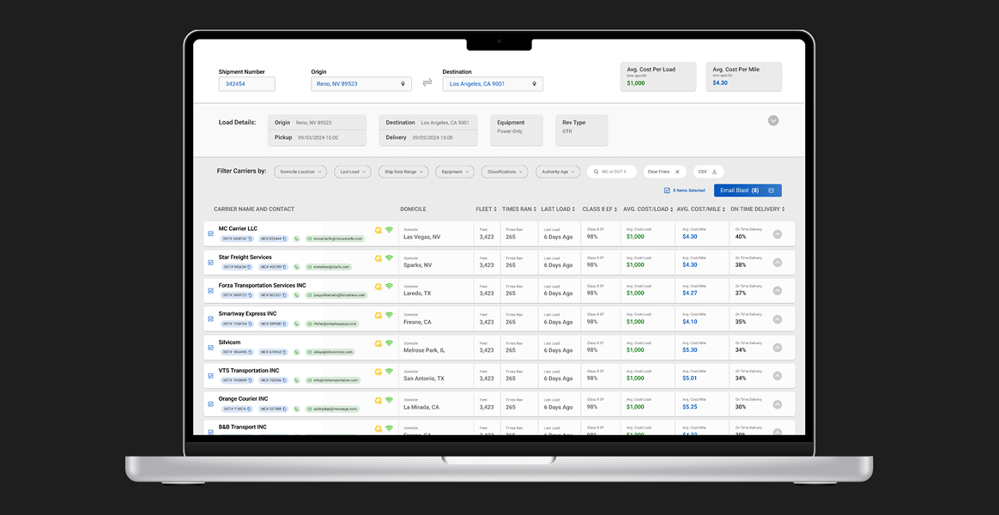
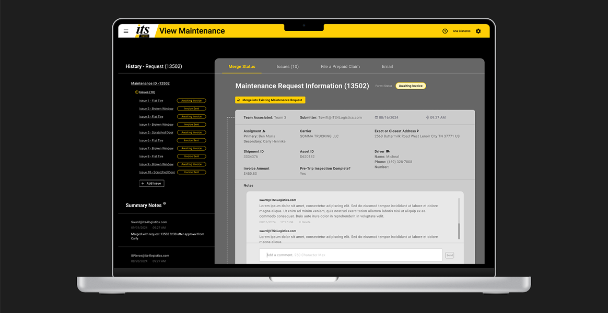
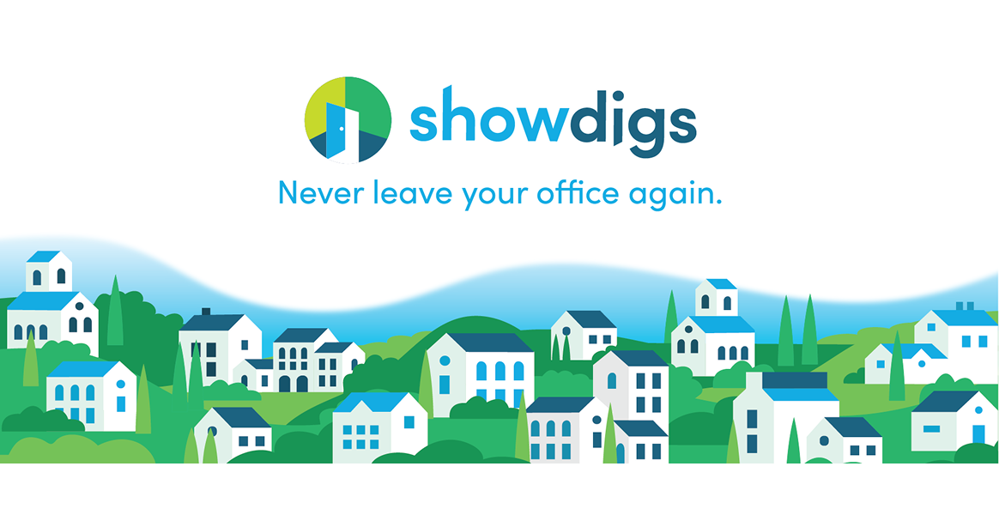
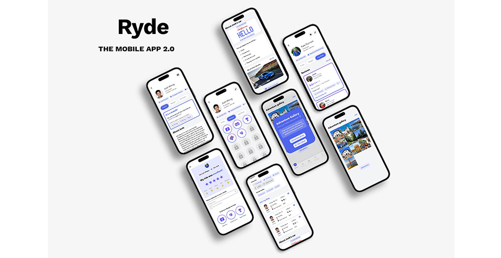

Carrier Sourcing Tool — UX & Product Design
Designed a carrier sourcing tool for ITS Logistics' operations team, collaborating with Product to translate PRD requirements into high-fidelity Figma prototypes.
View Project
SaaS Landing Page — Graphic & Motion Design
Designed eight landing page hero concepts, including one animated version, for Showdigs, a SaaS property management platform.
View ProjectSaaS Social Media — Graphic & Motion Design
Designed branded social media graphics and animations for Showdigs' SaaS property management platform, supporting digital marketing campaigns.
View Project
Maintenance Request Tool — UX & Product Design
Designed an enterprise maintenance request workflow that enables users to merge, organize, and manage asset issues within ITS's in-house platform.
View Project
Product Marketing & Trade Show Design
Developed branded trade show banners, one-pagers, and merchandise to support product positioning and in-person marketing efforts for Showdigs' SaaS platform.
View Project
UX Redesign & Product Strategy — Ryde App
Led an 8-week research-driven redesign of Ryde's mobile profile experience, guiding a cross-functional team from user interviews through high-fidelity prototypes.
View Project